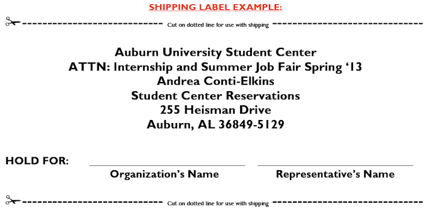

| Career Center HOME | College of Business OPCD |
Internship and Part-Time Job Fair


Tuesday, January 28, 2014
10:00 AM - 1:00 PM
Student Center Ballroom
Event Description
The Internship and Part-time Job Fair is offered annually in the spring and attracts students who are interested in obtaining summer internships or part-time employment to gain experience if their field of study. Participating employers can expect to meet students of all class levels and majors.
Employer Information
Internship and Part-Time Job Fair Details
Internship and Part-time Job Fair Policies
Internship and Part-time Job Fair Travel
Need a place to stay?
We highly recommend
The Hotel at Auburn
University
and Dixon Conference Center
1-800-228-2876

Internship and Part-time Job Fair Details
Registration Fee
A three-hundred dollars ($300.00) registration fee will include one 3 x 6 foot table and up to a maximum of two (2) representatives may attend.
The total registration fee must be paid in full by Friday, January 4, 2013 to keep your reservation.
Extra Tables: Extra tables may be reserved prior to the event at a charge of three-hundred dollars ($300.00) each.
W-9 Form: If you need a completed and signed W-9 form before paying event fees, please contact Susan Salheiser at the contact information below. You may provide her with your organization's form or she can send you one from Auburn University.
Procurement & Payment Services
Attn: Susan Salheiser, Assistant II-Financial-Central
311 Ingram Hall
Auburn, AL 36849-5101
Telephone: 334-844-3567, FAX: 334-844-4306, E-Mail: salhesu@auburn.edu
Event Schedule
Please arrive on time and be ready to see students at the start of the event (10:00 AM). If not present by 10:30 AM, you will be considered a “NO SHOW”. Your space can then be assigned to another organization.
| 8:00 AM-10:00 AM | Representative Continental Breakfast |
| 9:00 AM-10:00 AM | Representative Registration and Space Setup |
| 10:00 AM-1:00 PM | Internship and Part-time Job Fair open to Students |
| 1:00 PM | Internship and Part-time Job Fair Ends |
Please plan to stay until 1:00 PM. The time has been publicized and students expect company representatives to be available up until that time.
Internship and Part-time Job Fair Policies
Cancellation Policy
There are no refunds for cancellations after Friday, January 4, 2013! One half of the registration fee ($150.00) is charged for all cancellations prior to the deadline date whether the registration fee is paid in advance or not. We would like for all participants in our programs (events) to pay the total registration fee in full by the deadline date to keep your reservation. We understand that some might not be able to do this, so we are flexible in working with you. Let us know in advance and we will be happy to accommodate you. If your organization is registered for the event and no one shows up, your organization is expected to pay the balance due. Failure to pay event fees will cause us to block your organization from utilizing any services available through our office until the matter is cleared. Registration fees cannot be applied to future events.
Should you have to cancel, please call the Auburn University Career Center office as soon as possible at (334) 844-3862 and ask to speak with Diane Thorne, Special Events Registration Manager. An e-mail must be sent to Diane Thorne at thornde@auburn.edu explaining that you are officially canceling your organization's participation in the event. Diane will send you an e-mail confirming your cancellation. It is important to keep a copy of this communication as documentation for future reference.
Please understand that once you have registered and received a confirmation, you must abide by the CANCELLATION POLICY. There are no
exceptions!! Any questions or concerns should be directed to Melvin K. Smith, Special Events Coordinator, (334) 844-4744 or mks@auburn.edu
We appreciate your cooperation and support in our programs!
Setup and Equipment Details
One 3x6 foot table and one chair will be provided per organization. Your display needs to fit within space provided! *Electricity will be available! Please bring your own extension cords and power strips.
Display Guidelines
Space is limited. No additional space can be provided.
Do not bring huge displays, furniture, or equipment.
Do not rearrange your table, occupy an adjacent vacant table or move to another location without approval from Melvin K. Smith, Special Events Coordinator. Staff will be available to help you relocate and move your materials, if needed.
Shipping and Exhibitors Guidelines
Shipping to the Student Center
Shipments of exhibit displays, materials or anything pertaining to the exhibit may be shipped no sooner than three (3) days prior to function date. Accommodations for packages needing to arrive earlier must contact Melvin K. Smith, Special Events Coordinator, (334) 844-4744 or mks@auburn.edu for approval! Storage space is very limited. We will do our very best to work with you!
Please use our Preferred Carriers (Fedex and UPS) to ship materials! See the example of how each box or display should be addressed for shipping to The Auburn University Student Center (AUSC). Your organization’s name is required on the outside of all materials. Print off multiple pre-made labels) for your convenience (one (1) per box or container to be shipped).
Make sure the representative(s) attending the event have ALL tracking numbers of packages that have been shipped to HAUDCC prior to arriving at the event. We highly recommend you insure ALL of your materials shipped!
On the day of the event, beginning at 8:00 am, representative(s) of your organization may go to the Representative Registration Table in the Lobby outside of the 3rd Floor Ballroom of the AUSC to pick-up your shipped materials. To receive the items from an Auburn University Career Center staff member, a signature will be required from your representative(s).

Shipping from the Student Center
Patrons must make their own shipping arrangements, to include billing arrangements with the Preferred Carriers (Fedex and UPS). The AUSC cannot provide billing arrangements, proper packing and labeling. The form must be filled out completely with the organization’s account number!
After the Part Time Job Fair: ALL boxes must be appropriately labeled and taped! Please take packages to the Representative Registration Table in the Lobby outside of the 3rd Floor Ballroom of the AUSC where a member of the Auburn University Career Center will be available to check-in your materials for shipping out. AUSC will make one call to each preferred carrier for pick-up!
Carriers used other than the Preferred Carriers (Fedex and UPS) should arrive by 1:00 pm no later than 2:00 pm to pick-up materials at the Representative Registration Table in the Lobby outside of the 3rd Floor Ballroom of the AUSC the day of the event. The representative(s) attending the event for the organization are responsible for making sure the connection is made.
Auburn University will not hold packages awaiting pick-up. If the organization’s representative(s) do not attend the event, the organization is responsible for making arrangements to get their packages.
Exhibitors
Decorations, signs, and posters must be coordinated with AUSC staff prior to displaying in the Student Center. No tacks, nails, staples, tape or other fasteners are allowed. Exhibitors are liable for any defacement of the facility as a result of their display!
The exhibitor is entirely responsible for the space leased by him/her and is responsible for keeping space free from any conditions which would be dangerous to persons coming upon the premises.
The management of the AUSC reserves the right to restrict the operation of any exhibit, which in its opinion detracts from the general character of the facility. This includes, but is not limited to, exhibits, which because of noise, flashing light, methods of operation or display of unsuitable material are determined by management as objectionable.
The Auburn University Career Center and Student Center will not be responsible for any injury that may arise to exhibitors or their employees or for loss of or any damage to any good from any course whatsoever while in transit to or from or while in the AUSC.
We request your full cooperation in observing these guidelines. Anything not included in the rules and regulation
will be subject to the discretion of Auburn University management.
Internship and Part-time Job Fair Travel
Accommodations
334-821-8200 or 1-800-228-2876
We highly recommend that you stay at The Hotel at Auburn
University and Dixon Conference Center and make your
reservations as soon as possible! Please inform them that you will
be attending the Internship and Part-time Job Fair when
making reservations to get the $102.00 rate. (A block of rooms
has been set aside but must be reserved at least ONE MONTH in advance for availability and rate.) **The special rate for this event has been extended until Monday, January 7, 2013 at 4:45 PM for all Internship and Part-time Job Fair participants.**
Government Rate: The Hotel at AU and Dixon Conference Center is pleased to offer a reduced rate for Federal Government employees and members of the military. Please call 334-821-8200 to make your reservation and request the per diem government rate of $77.00 with the Internship and Part-time Job Fair. Be prepared to present a valid Federal or Military ID at check-in.
Transportation
Car Rental: Enterprise Rent-A-Car 334-826-0227
The Hotel at AU & Dixon Conference Center is within 5 minutes walking distance of the Auburn University campus and downtown Auburn shops and restaurants.
Parking
Please park in the Stadium Parking Deck (SPD) located at the end of Duncan Drive. The Parking Services Department has agreed not to ticket the cars in the lot the entire day. Make sure you park between two (2) white lines! Arrive EARLY because parking spaces fill quickly!
If you arrive at the Stadium Parking Deck (SPD) and there are no parking spaces, you may park in the Arena Parking Lot. To arrive at the Arena Parking Lot, exit the SPD via the Heisman Drive exit (located at the opposite end of the SPD which you arrived in from Duncan Drive). Veer right and make a left turn when facing Jordan-Hare Stadium. Go directly through the traffic light and take the first right into the Arena Parking Lot. The Parking Services Department has agreed not to ticket the cars in the lot the entire day.
Guest parking permits are available for the other campus lots through the Auburn University (AU) Parking Service Department at no cost. You need to make arrangements to arrive early (the day before) to get a permit. The Parking Department is open 7:15 am until 4:15 pm, Monday through Friday, and can be contacted at 334-844-4143 with questions. Their office is in the South Quad Parking Deck on the corner of Duncan and Lem Morrison Drive.
-Our best recommendation is to take advantage of the parking we have available in the Stadium Parking Deck!
You must follow all parking rules and regulations set forth by the AU Parking Service. The Auburn University Career Center cannot be responsible for tickets that are received while parked on campus, nor wheel-locks and towing fees as a result of parking.
Directions
**When making travel arrangements from Atlanta or Columbus, GA, please remember that Auburn University is located in the Central Time Zone whereas Georgia is in the Eastern Time Zone.
To Auburn From Montgomery on I-85 North:
- Get off I-85 N at EXIT 51
- Take a LEFT at the light onto S. College Street.
- Stay on College Street for about 4 miles. You will arrive at Thach Avenue and will see Samford Hall on the left hand side of the street and the University Chapel on the right.
To Auburn From Atlanta on I-85 South:
- Get off I-85 S at EXIT 57. Follow road to the right.
- At the second traffic light, take a LEFT onto Glenn Avenue.
- Stay on Glenn Ave. for about 4 miles
- After you turn onto Glenn Avenue you will travel through six traffic lights. The seventh light will be College Street.
- Take a LEFT onto College Street
- Travel to the next traffic light, Magnolia Avenue (you are now at Toomer's Corner)
- As you cross the intersection, J&M Bookstore will be on the left side of the road, and Auburn University will be on the right.
To Auburn from Birmingham on Highway US-280E:
- Take a RIGHT off US-280E onto AL-147/College Street (there will be a Conoco Service Station at the intersection)
- Stay on AL-147 for 4.8 miles. It is a straight shot to Auburn where AL-147 will turn into College Street.
- After you cross the railroad tracks you will enter downtown Auburn.
- The light following the tracks will be at Glenn Ave. Go through the intersection.
- The next intersection will be Magnolia Avenue (Toomer's Corner)
- As you cross the intersection, J&M Bookstore will be on the left side of the road, and Auburn University will be on the right.
Questions or concerns regarding the above information? Please contact:
Melvin K. Smith, Special Events Coordinator
Auburn University, AL 36849-5139
334-844-4744
Last Updated: Oct 31, 2012